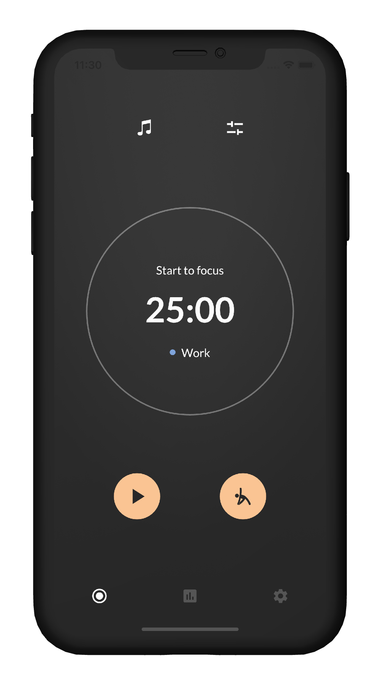
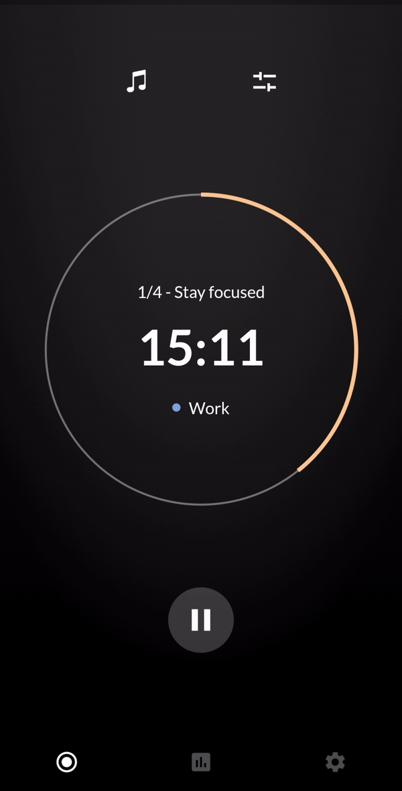

Foca Studio
Focus tools, made with care.
A small studio behind apps that help you focus, track time that matters, and train with intention. Start with Foca — our Pomodoro timer for iPhone, Mac, and Android.
Free to start · iPhone, Mac & Android




Main app
Foca — focus that feels calm.
Pomodoro sessions, ambient sound, and stretch breaks — so you stay productive without burning out.
- Immersive timer with carefully chosen ambient sound
- Guided stretch breaks between sessions
- Auto-Run for deep work blocks
- Beautiful on iPhone, Mac, and Android
Available on iPhone, Mac, and Android. Ad-free.
Very useful app, intuitive interface, nothing unnecessary, only what you need is to work productively.
Also from Foca Studio
Two more iPhone apps. Open a page for the full story.
Dayfold
Countdowns & anniversary widgets
Birthdays, launches, and streaks on your Home Screen.
- Home Screen and Lock Screen widgets
- Yearly repeats for birthdays
Core
Interval & HIIT timer
Clean rounds you can read from across the gym.
- Work, rest, and rounds
- Audio cues and workout history
The studio
Built by a tiny studio, not a content factory.
Foca Studio is the home of Foca, Dayfold, and Core. We ship focused utilities with strong taste — fewer apps, higher craft. Yating founded the studio; the brand is the work, not a personal blog.
Questions? foca-2020@outlook.com
Frequently asked questions
What is Foca Studio?
Foca Studio is an indie app studio founded by Yating Lu. It builds simple, ad-free apps for focus, meaningful dates, and workouts — starting with Foca, Dayfold, and Core.
What is Foca?
Foca is a minimalist Pomodoro focus timer for iPhone, Mac, and Android. It combines customizable focus sessions, calming ambient sounds, guided stretch breaks, Auto-Run mode, and focus statistics — without ads.
How is Foca different from a basic Pomodoro timer?
Beyond a countdown, Foca adds ambient sounds, guided stretch breaks during rests, Auto-Run so sessions continue without tapping back, custom focus categories, and weekly statistics so you see where your time went.
Does Foca include stretch breaks?
Yes. When a focus session ends, you can follow guided stretches for neck, shoulders, back, hands, legs, or full body, with illustrations and voice guidance.
Is Foca available on iPhone, Mac, and Android?
Yes. Foca is available for iPhone and Mac on the App Store, and for Android on Google Play. Dayfold and Core are available for iPhone.
What is Dayfold?
Dayfold turns meaningful dates into countdown and anniversary cards with Home Screen and Lock Screen widgets, optional reminders, and yearly repeats for birthdays and anniversaries.
What is Core?
Core is an interval and HIIT workout timer. Set work, rest, and rounds for Tabata, boxing, circuits, and similar training, with audio cues and workout history.
Are Foca Studio apps ad-free? Do you collect my data?
Foca is ad-free. Dayfold stores moment content locally on your device and does not require an account. Check each app’s App Store privacy label for the latest practices. Optional Pro / Plus unlocks are in-app purchases.
Using Foca on Android? Notification and background steps are in the help center.